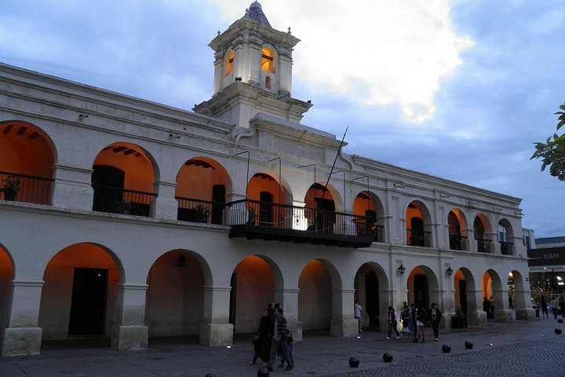
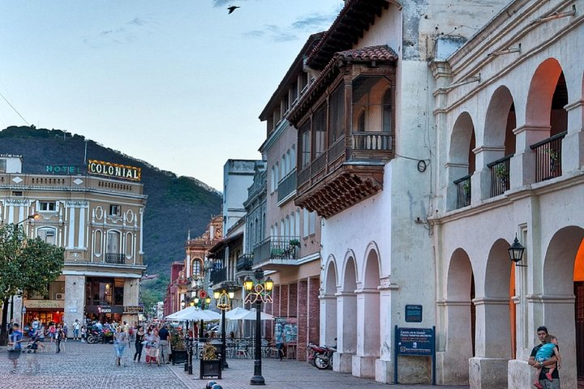
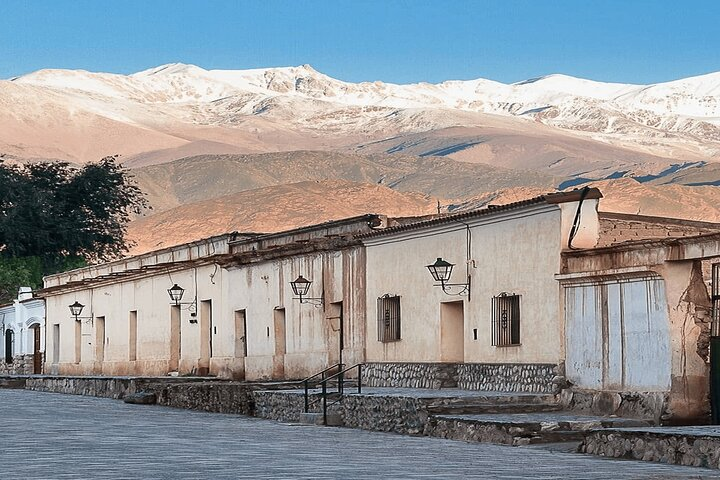
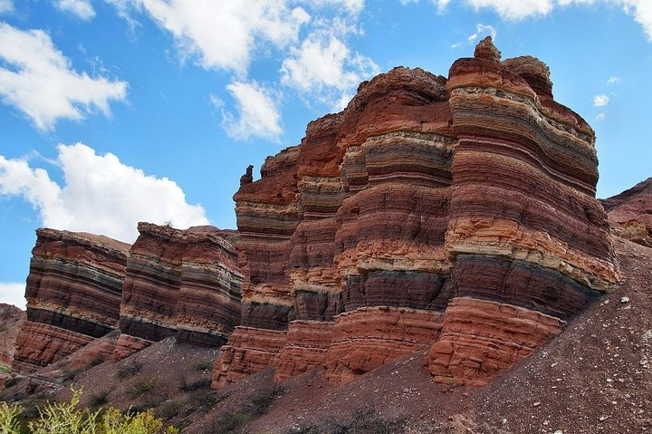
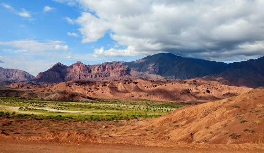
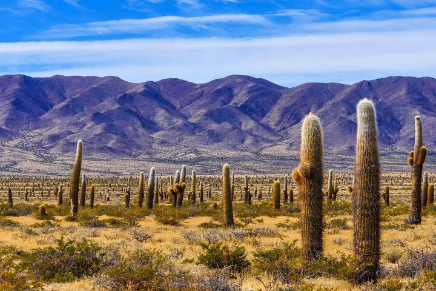
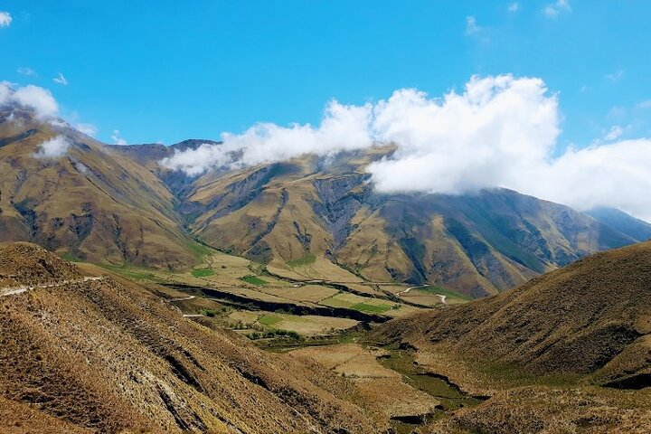
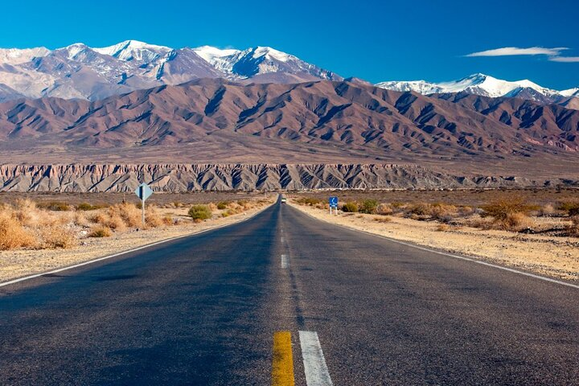

BIENVENIDOS A SALTA
Está ubicada al noroeste del país, su capital es la homónima Salta, limitando al norte con la provincia de Jujuy y con los departamentos de Potosí y Tarija , en Bolivia, al este con las provincias de Formosa y Chaco, al sur con las de Santiago del Estero, Tucumán y Catamarca, y al oeste con la Región de Antofagasta en Chile.
ALGUNOS SITIOS QUE PUEDES VISITAR
Salta Capital
Salta es una ciudad del noroeste de Argentina,
capital de la provincia . Se encuentra ubicada en el sector norte del Valle de
Lerma. Su superficie aproximada es de 120 km². Es también la ciudad más poblada de
la provincia, la segunda del NOA y la séptima del país. Se encuentra ubicada al este
de la cordillera de los Andes, en el Valle de Lerma, a 1187 m s. n. m.



Ubicación de Salta Capital
Cafayate y Cachi
Ubicados en la región de los Valles Calchaquíes,
para llegar hasta ellos se deberá recorrer impresionantes caminos rodeados de montañas
y cerros pertenecientes a la precordillera de los Andes. Una vez en Cafayate se podrá
admirar las increíbles formaciones provocadas por la erosión del viento y del agua,
como el Anfiteatro, Los Castillos y la Garganta del Diablo. En el camino a Cachi
también se podrá disfrutar de un espectáculo de paisajes diversos: selvas,
climas de altura, cardones, cóndores y picos nevados de más de 6.000 msnm.



Ubicación de Cafayate
Parque nacional los Cardones
Se encuentra cerca de la localidad de Payogasta en la región
centro-sur de la provincia de Salta en Argentina. Dista aproximadamente 100 km de la
ciudad de Salta y fue creado el 20 de noviembre de 1961 y posee 64 117 ha
(de las cuales 10 902 ha se proponen como reserva nacional)
en un ambiente de sierras secas, con altitudes de entre los 2600 m s. n. m




Ubicación de Parque nacional los Cardones